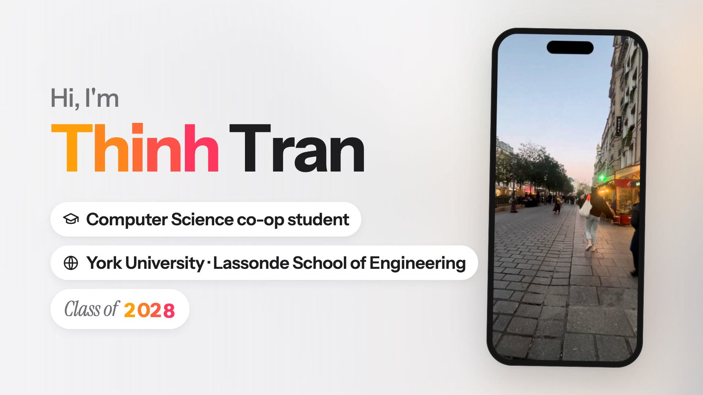

C — Goals and Portfolios
Goals and Portfolios
Goals organize this ePortfolio. My first goal, Discover Myself, holds four portfolios. Each artifact in them comes with a reflection on what it shows about me.
Goal 1: Discover Myself
Dreams and Goals
What I want to do, and why.
- Why computer science. Choosing computer science was about finding my passion. I tried other paths first, and building software was the first thing that held my attention the way it does now.
- Where I'm headed. A career as a software engineer or developer, working in AI.
- What I want from this co-op. Experience at a global-scale company, doing real work in my field.
Artifact: my Why Me video

My 75-second pitch, on the Why Me page. The story and script came from my own answers about my friend, my switch from nursing to computer science, and my values. I recorded the voice-over myself on my phone in one take and filmed my own clips. It shows communication because I told my "why" in about 75 seconds in my own voice, curiosity because my love of creating and exploring pushed me toward computer science, and agility because I started over in a new field. A classmate told me to spend more time on my own story, like the AI training and Paris, and my instructor told me to spend more time on one project and show my GitHub resume pipeline. Next time I will do both.
Interests and Skills
What I'm drawn to, and what I can already do.
- Technical skills: listed in full on the Career page.
- What I build for fun: AI workflows and web apps. See Projects.
- Outside of tech: basketball, volleyball, badminton, rock climbing, weightlifting, cooking and music.
Artifact: my SMART personal development goals
I set six goals in October 2026 for three undergraduate competencies, two for each. Each goal is followed by my progress at the midpoint of the term, as of October 27, 2026.
Initiative and Entrepreneurship
- From October 12 to December 18, 2026, I will keep every work and course task in one task list in Google Docs, review it every Monday morning, and do the task I most want to avoid first each day. I will start each of these LE/COOP 2100 assignments at least seven days before it is due and record the date I started, so I can check whether I met this: About Me (October 25), the Learning Journal (November 1), My Vision as an Engineer (November 22) and the final ePortfolio (December 13).
Progress: I set up one task list in Google Docs on October 11 and mostly kept these habits, but I did not track them, so I have no record of my Monday reviews. I started About Me on October 23, five days after my October 18 start date, and I had not started the Learning Journal by my October 25 start date. - By April 30, 2027, I will complete at least four of the features I have not yet implemented in my restaurant side project, one a month from January to April 2027: the project is live, but some features I planned have been sitting unfinished. By January 4, 2027, I will list every unfinished feature in my task list and break each one into weekly milestones that I check off every Sunday. Also by January 4, 2027, I will set up one folder for each Winter 2027 course and save notes and files there the same day I make them, checking at the end of each month until April 30, 2027 that nothing is left outside those folders.
Progress: starts January 4, 2027.
Agility and Adaptability (my workplace goals, agreed with my supervisor)
- By December 18, 2026, the last day of my co-op term, I will deliver the October 19 Microsoft 365 Copilot training and at least one more training session at Groupe Bel Canada, and send attendees a short feedback form after each one. Before each session I will learn at least one new Microsoft 365 Copilot feature and adapt the session's examples to the attendees' team and work. The training I delivered in the week of September 28 reached two people; I will compare the number of people trained and their feedback from session to session.
Progress: delivered the training in Paris on October 20 (planned for October 19) to 10–20 people, using a new Copilot feature (Create). No feedback form went out that day; I sent attendees a short anonymous survey on October 27. One more session is due by December 18. - By December 18, 2026, I will help colleagues build Microsoft 365 Copilot into at least one task they do regularly. Two weeks after each session, I will send a follow-up question to count how many attendees are using Copilot in their work, aiming for that number to grow after each session, and for each colleague who adopts it I will write a short before-and-after use case.
Progress: the two-week follow-up question to the October 20 attendees, asking whether they now use Copilot in their work, is due November 3.
Effective Oral and Written Communication
- At every training I deliver between October 19 and December 18, 2026, I will add a question about my presenting to the attendee feedback form (including whether I used filler words like "um"), choose one point to improve from the answers, and show that change in my next session. I will keep a one-line log for each session of the feedback I received and what I changed.
Progress: the October 27 survey asks about the training's length and what to change, but has no question about my presenting yet. My own log entry: tighter timing next time. - From October 12 to December 18, 2026, before I send a work email to anyone outside my immediate team, I will check that it is professional: it has a greeting and a sign-off, states what I need in the first two sentences, and has no typos or slang. Every Friday I will count how many of that week's emails needed a follow-up message to clarify something, and aim for fewer each month.
Progress: I missed the Friday counts, so on October 27 I counted from my sent emails. In the week of October 12, one email needed a follow-up message to clarify it; in the week of October 19, while I was in Paris, I sent no work emails. Weekly counts start on October 30.
I chose the two competencies my self-assessment ranked highest, Initiative and Entrepreneurship (7.00 out of 7) and Agility and Adaptability (6.83), which my supervisor sees as my strength, and Communication (4.57) as the weak spot to fix, because my SWOT and my supervisor both pointed to it. Halfway through, the hardest parts have been tracking my habits, which I mostly kept but did not record, and starting assignments early. For the second half of the term, I will tick the list after each Monday review, write down each start date the day I start, and count my emails every Friday.
Values and Personality
What drives how I work.
- What I've noticed so far: I'm efficient and adaptable. More on how I work on my About Me page.
Artifact: my About Me essay
My story and my top ten values, on the About Me page. It is built from my answers to questions about my life, my friend, my values and my story, and I picked and ranked my top ten values with the course's Values Assessment. It shows agility because in 2023 I took a big risk and switched into computer science, initiative because I caught up after starting late with a summer course, projects outside class and daily study, and critical thinking because I worked out what I value and where my values clash, like risk against job security. What surprised me most was that risky tasks came out as my number one value, because I see myself as careful.
Building Credentials
Evidence of what I've done so far.
- Experience: a co-op term at Groupe Bel Canada, a Florida search-expansion project for Swimingo, a live ordering platform for Pho Ginger, a technical lead role on a Riipen Labs project, and inventory work at Aritzia. Details on the Career page.
- Projects: four selected builds on the Projects page.
- Certifications: Mastering Design Patterns with Java and Spring Boot REST API with Java & Gradle (CodeSignal, 2026).